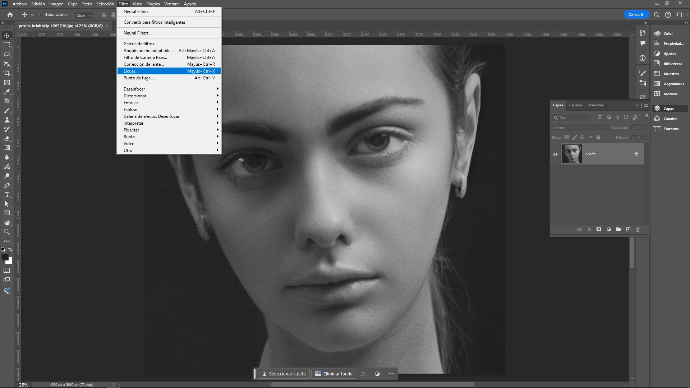
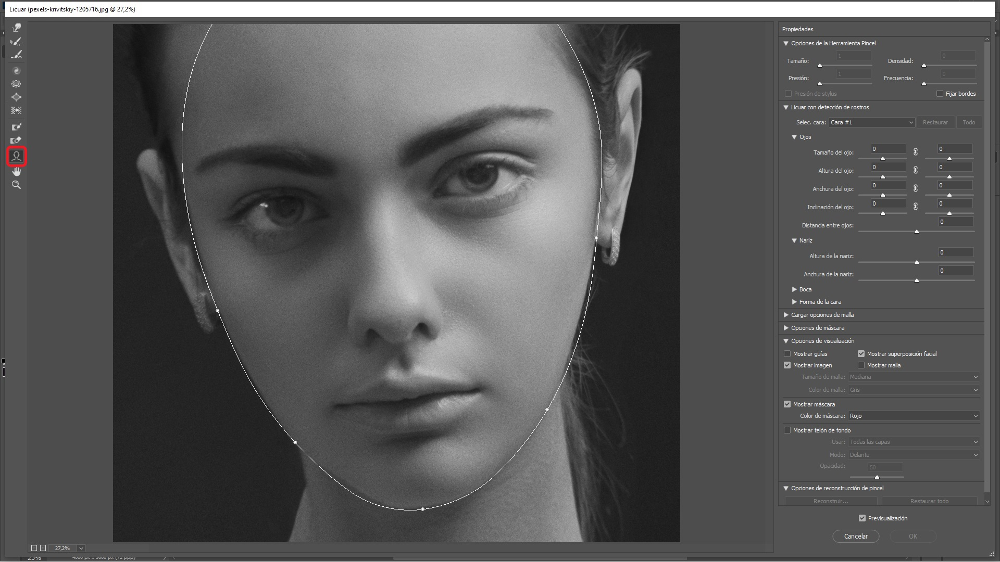
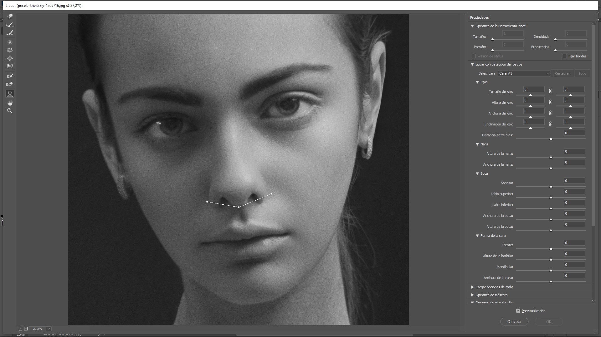
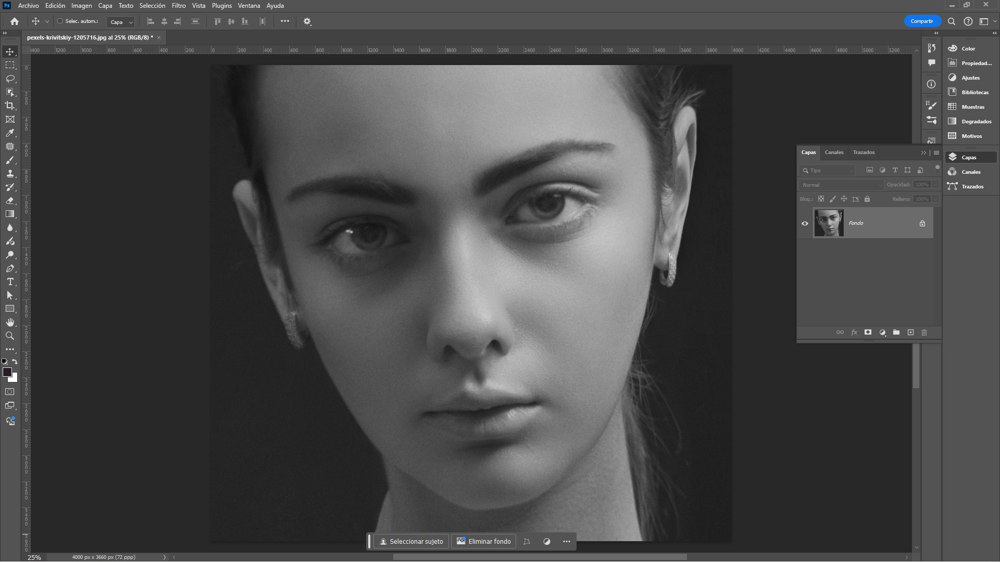
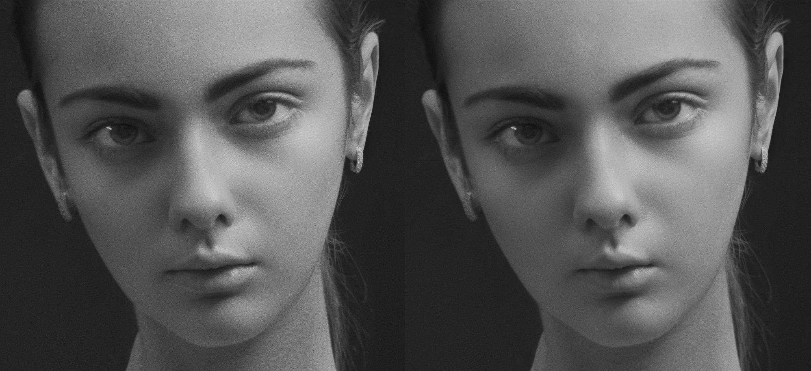

Filtros Licuar
Introducción
Los filtros de licuar en Adobe Photoshop permiten realizar ajustes en las imágenes de manera no destructiva, manipulando píxeles para alterar formas y detalles sin afectar la calidad general de la imagen. A continuación, se detallan las herramientas clave del filtro de licuar:
- Herramienta de Deformación: Permite empujar los píxeles en cualquier dirección, ideal para cambiar la forma de objetos o rostros.
- Herramienta de Reconstrucción: Revierte los cambios aplicados, volviendo gradualmente la imagen a su estado original en áreas seleccionadas.
- Herramienta de Inflar: Aumenta el tamaño de una selección, como si se estuviera "inflando" una parte de la imagen.
- Herramienta de Desinflar: Reduce el tamaño de una selección, útil para adelgazar partes de la imagen.
- Herramienta de Remolino: Rota los píxeles de una selección en una dirección, generando un efecto de espiral.
- Herramienta de Desplazar hacia la Izquierda o Derecha: Mueve los píxeles horizontalmente, lo que es útil para ajustar la simetría en los elementos de la imagen.
- Máscaras de licuar: Permiten proteger áreas específicas de la imagen para evitar que se deformen al aplicar las herramientas de licuar.
El filtro de licuar es útil para realizar retoques fotográficos como ajustes faciales, cambios en la figura y también en la manipulación creativa de imágenes.
Herramienta Licuar - Cara
A continuación, se explica cómo se utiliza esta herramienta:
- Acceso al filtro Licuar en Photoshop:
- En el menú superior, seleccione Filtro > Licuar (Liquify) >. 
- Se abrirá una nueva ventana donde encontrará varias herramientas y opciones.
- En el menú superior, seleccione Filtro > Licuar (Liquify) >.
- Herramientas principales en el panel de Licuar: Estas son algunas de las herramientas que tiene el filtro licuar:
- Deformar hacia adelante (Forward Warp Tool): Permite empujar los píxeles en la dirección en que se arrastra el pincel.
- Reconstruir (Reconstruct Tool): Revierte parcialmente o totalmente las distorsiones aplicadas.
- Desinflar (Pucker Tool): Hace que los píxeles se contraigan hacia el centro del área seleccionada.
- Inflar (Bloat Tool): Hace que los píxeles se expandan desde el centro.
- Rotar (Twirl Tool): Gira los píxeles en sentido horario o antihorario.
- Congelar (Freeze Mask Tool): Protege áreas de la imagen para que no se vean afectadas por las modificaciones.
- Descongelar (Thaw Mask Tool): Libera las áreas previamente congeladas para permitir su edición.
- Cara: Reconoce automáticamente los rostros en la imagen y permite modificar características faciales específicas, marcada por defecto. 
- Detección automática de rostros:
- Photoshop detectará automáticamente los rostros presentes en la imagen y delineará las áreas principales del rostro (ojos, nariz, boca, frente y mandíbula).
- Si la imagen contiene más de un rostro, podrá seleccionar cuál desea editar haciendo clic sobre el rostro correspondiente.
- Modificación de los rasgos faciales: Al hacer clic en cada área del rostro, podrá ajustar diversos parámetros. Las opciones se dividen en las siguientes categorías:
- Ojos:
- Tamaño del ojo: Aumenta o reduce el tamaño de los ojos.
- Altura del ojo: Modifica la altura de cada ojo de manera independiente o conjunta.
- Ancho del ojo: Ajusta el ancho de cada ojo.
- Distancia entre ojos: Controla el espacio entre ambos ojos.
- Nariz:
- Altura de la nariz: Permite modificar la longitud de la nariz.
- Ancho de la nariz: Ajusta el ancho del puente o la base de la nariz.
 - Boca:
- Sonrisa: Permite modificar la curvatura de los labios para crear una sonrisa más marcada o neutral.
- Altura del labio superior: Ajusta la altura del labio superior.
- Altura del labio inferior: Controla la altura del labio inferior.
- Ancho de la boca: Aumenta o disminuye el tamaño horizontal de la boca.
- Contorno del rostro:
- Altura de la frente: Permite ajustar la altura de la frente.
- Anchura de la mandíbula: Modifica el ancho de la mandíbula.
- Altura del mentón: Cambia la longitud del mentón.
- Ojos:
- Controles precisos: Puede realizar ajustes precisos arrastrando directamente las características faciales en la imagen o utilizando los controles deslizantes en el panel derecho. Photoshop hace que los cambios se vean naturales al aplicar las transformaciones, preservando las proporciones del rostro y las características originales.
- Aplicación y finalización:
- En esta imagen se ha modificado de ancho de la boca de la Modelo.
- Luego se hace click para guardar la edición.
Comparación Antes y después de angostar la boca.
Herramienta Licuar - Deformar Hacia Adelante
La herramienta Deformar hacia adelante (Forward Warp Tool) en Photoshop es una de las más utilizadas dentro del filtro Licuar, ya que permite empujar píxeles en la dirección en que se arrastra el pincel, lo que es útil para realizar modificaciones en la forma de objetos o partes del cuerpo de una manera suave y controlada.
Cómo usar la herramienta Deformar hacia adelante:
- Abrir el filtro Licuar:
- Abrir la imagen en Photoshop y vaya al menú superior: Filtro > Licuar.
- Se abrirá la ventana del filtro Licuar, con varias herramientas a la izquierda. La primera opción es Deformar hacia adelante (icono de un dedo apuntando hacia la derecha).
- Ajustar los parámetros del pincel: Se tiene los siguientes parámetros para configurar:
- Tamaño del pincel: Determina qué tan grande será el área que desea deformar.
- Densidad del pincel: Controla la suavidad de los bordes del pincel. Una densidad alta hace que los bordes de la deformación sean más suaves.
- Presión del pincel: Ajusta la intensidad de la deformación. A mayor presión, más drástica será la modificación.
- Aplicar la deformación:
- Una vez configurado el pincel, haga clic en la imagen y arrastre en la dirección en que desea mover los píxeles. A medida que arrastra, los píxeles se moverán de forma continua.
- Para obtener resultados más sutiles, use movimientos cortos y repetitivos. Para cambios más grandes, puede arrastrar el pincel a mayor distancia.